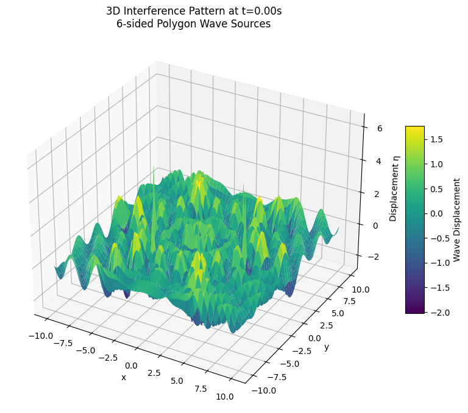
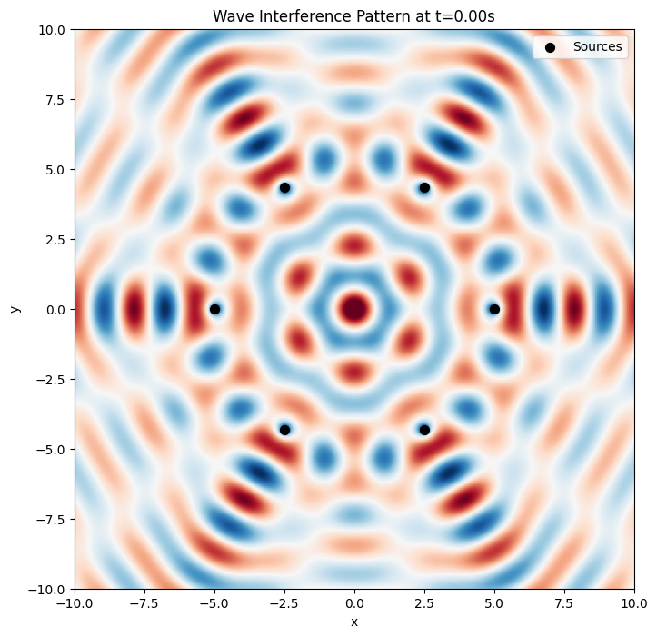
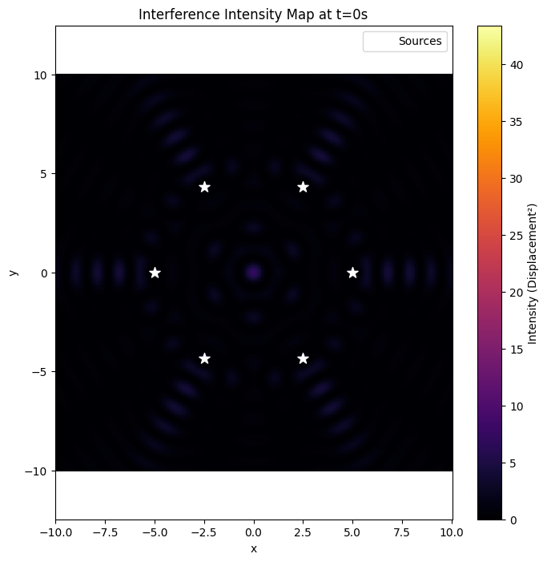

Problem 1
Wave Interference Patterns
1. Theoretical Background
1.1 Wave from a Point Source
Each point source located at \((x_0, y_0)\) emits a circular wave on the water surface described by:
where:
- \(A\) is the amplitude,
- \(k = \frac{2\pi}{\lambda}\) is the wave number,
- \(\omega = 2\pi f\) is the angular frequency,
- \(r = \sqrt{(x - x_0)^2 + (y - y_0)^2}\) is the distance from the source to point \((x,y)\),
- \(\phi\) is the initial phase.
The \(1/\sqrt{r}\) term models the wave amplitude decay with distance, typical for cylindrical waves.
1.2 Superposition Principle
When multiple sources emit waves simultaneously, the resulting displacement at a point is the sum of all individual displacements:
where \(N\) is the number of sources, and each \(r_i\) is the distance from the \(i\)-th source.
1.3 Regular Polygon Source Arrangement
The point sources are placed at the vertices of a regular polygon inscribed in a circle of radius \(R\). The vertices coordinates are:
with
2. Numerical Simulation & Visualization
We will use Python with libraries:
- NumPy: for efficient numerical calculations.
- Matplotlib: for 2D and 3D plotting.
- Matplotlib.animation: for creating animated time evolution of interference.
2.1 Simulation Code with Extended Features
import numpy as np
import matplotlib.pyplot as plt
from matplotlib import cm
from matplotlib.animation import FuncAnimation
# Parameters
N = 6 # Number of vertices (hexagon example)
R = 5.0 # Radius of polygon circle
A = 1.0 # Amplitude
wavelength = 2.0 # Wavelength λ
k = 2 * np.pi / wavelength # Wave number
f = 0.5 # Frequency (Hz)
omega = 2 * np.pi * f # Angular frequency
phi = 0 # Initial phase
# Generate source points coordinates
angles = np.linspace(0, 2*np.pi, N, endpoint=False)
sources_x = R * np.cos(angles)
sources_y = R * np.sin(angles)
# Observation grid
grid_size = 300
x = np.linspace(-10, 10, grid_size)
y = np.linspace(-10, 10, grid_size)
X, Y = np.meshgrid(x, y)
def wave_displacement(X, Y, t):
"""Calculate superposed wave displacement at time t."""
eta_sum = np.zeros_like(X)
for x0, y0 in zip(sources_x, sources_y):
r = np.sqrt((X - x0)**2 + (Y - y0)**2)
r[r == 0] = 1e-6 # Avoid division by zero at source
eta_sum += A / np.sqrt(r) * np.cos(k * r - omega * t + phi)
return eta_sum
# Plot 3D surface at fixed time t
fig = plt.figure(figsize=(10, 8))
ax = fig.add_subplot(111, projection='3d')
t = 0 # Time snapshot
Z = wave_displacement(X, Y, t)
# 3D surface plot
surf = ax.plot_surface(X, Y, Z, cmap=cm.viridis, edgecolor='none')
ax.set_title(f'3D Interference Pattern at t={t:.2f}s\n{N}-sided Polygon Wave Sources')
ax.set_xlabel('x')
ax.set_ylabel('y')
ax.set_zlabel('Displacement η')
fig.colorbar(surf, shrink=0.5, aspect=10, label='Wave Displacement')
plt.show()

2.2 Explanation of the 3D Plot
- The height (z-axis) represents the wave displacement at each \((x,y)\) point on the water surface.
- Peaks correspond to constructive interference, valleys to destructive interference.
- The shape of the interference pattern is heavily influenced by the polygon shape (number of sources and radius).
- The sources themselves are located on the circle's perimeter and are not explicitly marked here but can be added.
2.3 Animated Wave Interference Over Time
Visualizing how the pattern evolves over time helps understand wave propagation and phase effects.
fig, ax = plt.subplots(figsize=(8,8))
# Initialize the plot with zeros
Z = wave_displacement(X, Y, 0)
im = ax.imshow(Z, extent=[-10,10,-10,10], cmap='RdBu', vmin=-2*A, vmax=2*A)
ax.set_title(f'Wave Interference Pattern at t=0.00s')
ax.set_xlabel('x')
ax.set_ylabel('y')
# Plot source points
ax.scatter(sources_x, sources_y, color='black', s=50, label='Sources')
ax.legend()
def update(frame):
t = frame / 30 # time in seconds
Z = wave_displacement(X, Y, t)
im.set_data(Z)
ax.set_title(f'Wave Interference Pattern at t={t:.2f}s')
return [im]
ani = FuncAnimation(fig, update, frames=120, interval=50, blit=True)
plt.show()

2.4 Advanced Visualization: Interference Intensity Map
Plotting the square of the displacement (\(\eta^2\)) highlights energy and intensity, emphasizing constructive regions more clearly.
Z_intensity = wave_displacement(X, Y, 0)**2
plt.figure(figsize=(8,8))
plt.title(f'Interference Intensity Map at t=0s')
plt.xlabel('x')
plt.ylabel('y')
plt.pcolormesh(X, Y, Z_intensity, shading='auto', cmap='inferno')
plt.colorbar(label='Intensity (Displacement²)')
plt.scatter(sources_x, sources_y, color='white', marker='*', s=100, label='Sources')
plt.legend()
plt.axis('equal')
plt.show()

3. Analysis of Interference Patterns
- Number of sources \(N\): Increasing \(N\) increases the complexity, producing intricate interference fringes.
- Polygon radius \(R\): Larger \(R\) means sources are spaced farther, changing fringe spacing.
- Wavelength \(\lambda\): Controls fringe spacing; larger wavelength means wider fringes.
- Frequency and time \(t\): The pattern oscillates over time. Snapshots at different times show the dynamic nature.
- Amplitude decay \(1/\sqrt{r}\): Reduces amplitude with distance, realistic for circular waves.
Constructive interference:
Occurs where phase differences between waves are multiples of \(2\pi\), causing wave peaks to align, amplifying displacement.
Destructive interference:
Occurs where phase differences are odd multiples of \(\pi\), causing peaks of one wave to align with troughs of another, cancelling displacement.
4. Deliverables Summary
| Deliverable | Description |
|---|---|
| Markdown document | Full theoretical explanation + results discussion |
| Python code | Includes regular polygon setup, wave displacement calculation, and plotting (2D, 3D, animation) |
| Graphical outputs | Static 3D plots, animated 2D interference, intensity maps |
| Analysis | Interpretation of patterns, influence of parameters |
5. Optional Extensions for Further Study
- Allow varying initial phase \(\phi_i\) per source to study phase-shifted sources.
- Include damping effects to simulate wave energy loss over time.
- Animate 3D surface plots over time using
mpl_toolkits.mplot3danimations. - Interactive widgets (e.g., with
ipywidgets) to control parameters like \(N\), \(R\), \(\lambda\), and \(t\) live.